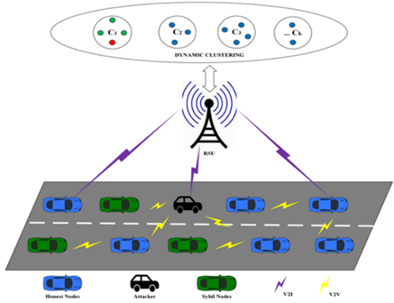
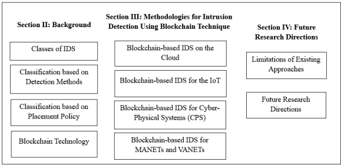

|
CV / LinkedIn / Google Scholar / Github / Twitter / Email: gideon.o.adele@okstate.edu |
|
I am a Ph.D student in the department of Computer Science at the Oklahoma State University
Before joining Oklahoma State University, I studied for my Bachelors degree in Computer science at the Federal University of Technology, Minna, Nigeria. |
|
|
My PhD research is in the area of security attacks in Vehicular Ad hoc Networks. I am working on proferring solutions to the problem of security attacks in VANETs using techniques such as machine learning, trust based schemes, mathemaitcal models and AI. |
|  |
Abstract—Detecting Sybil attacks in Vehicular Ad hoc Networks (VANETs) presents the challenge of validating proposed detection methods across varying scenarios because many proposed detection methods are not validated across diverse scenarios. Clustering also poses difficulties, as determining the optimal number of clusters (k) is a complex problem. In traditional clustering algorithms, the number of clusters (k) can vary depending on the type of VANET scenario considered in determining the appropriate value of k. To solve this problem of optimal selection of k, a dynamic k-means clustering framework, which adaptively determines the number of clusters required to group nodes and detect Sybil nodes with high accuracy, is developed. This method effectively clusters nodes in VANETs while identifying Sybil attacks. OMNET++ and SUMO simulators are used for simulation experiments. The proposed approach achieves an average accuracy of 99%, an average adjusted rand index of 0.91, and an average completeness of 0.76 across different scenarios and varying percentages of attackers on the network. |

|
Vehicular ad-hoc networks (VANETs) are the foundation for intelligent transportation systems and vehicular communication. It can be subject to different kinds of attacks of which Sybil attack is one. Sybil attack is unique in their capabilities of creating fake nodes known as Sybil nodes to disrupt the network and create problems. Different approaches for countering Sybil attacks have been proposed in the literature. In this paper, we discuss the state-of-the-art approaches used in countering Sybil attacks in VANETs. We also discuss the strengths and weaknesses of these approaches in countering Sybil attacks. Based on the weaknesses, some future research directions for mitigating Sybil attacks are also recommended. |
|  |
Intrusion detection systems can detect any entity or intrusions that can cause a violation of confidentiality, integrity, or availability in a system or network. We reflect on the use of blockchain technology for intrusion detection in cyber systems in this paper. We review the state-of-the-art literature adopting different blockchain technology-based methods for intrusion detection systems and compare the methodologies used. We also identify the advantages and limitations of these existing approaches and analyze the performance evaluation metrics used in these studies. Further, we identify several open research issues in blockchain-based intrusion detection and suggest some future research directions based on our findings. |
|
I've been a teaching assistant for the following courses at Oklahoma State University. |
|
|